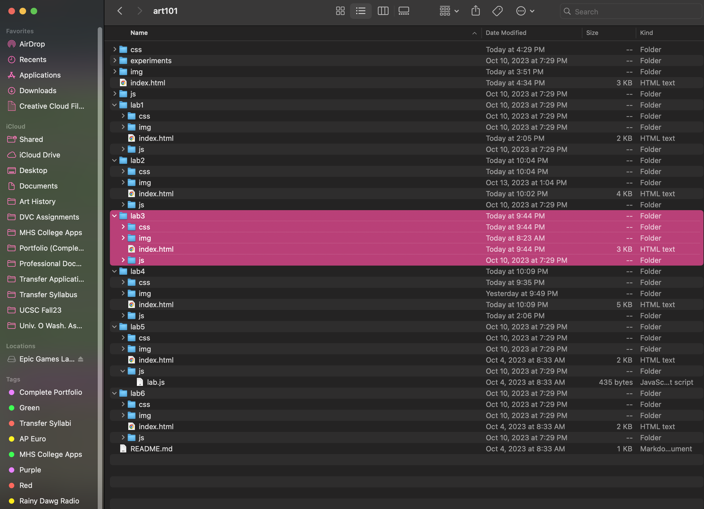
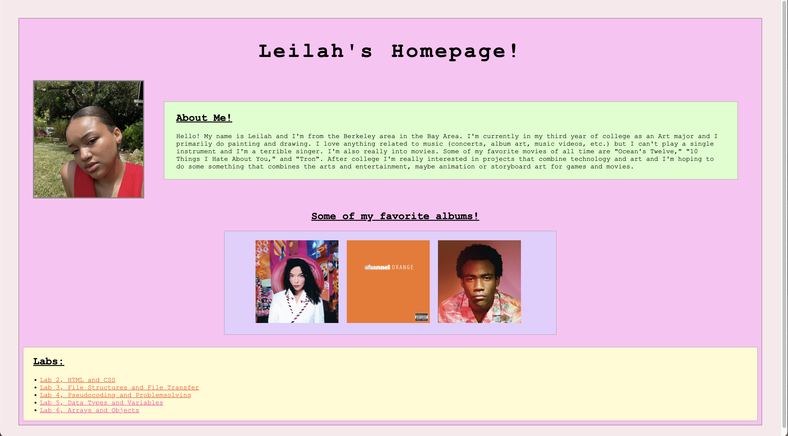
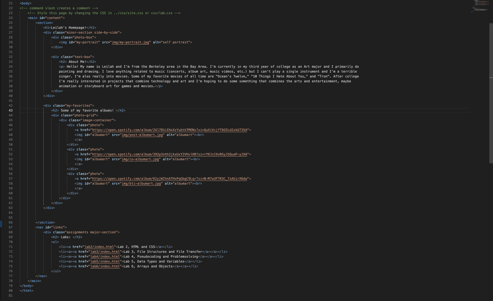
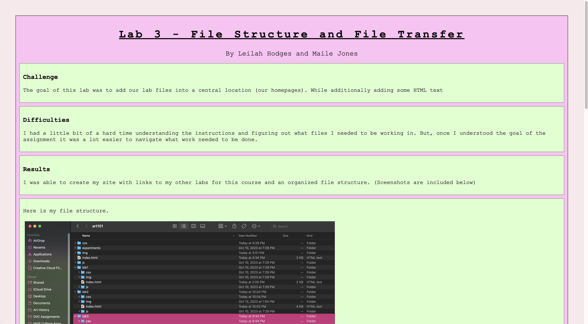
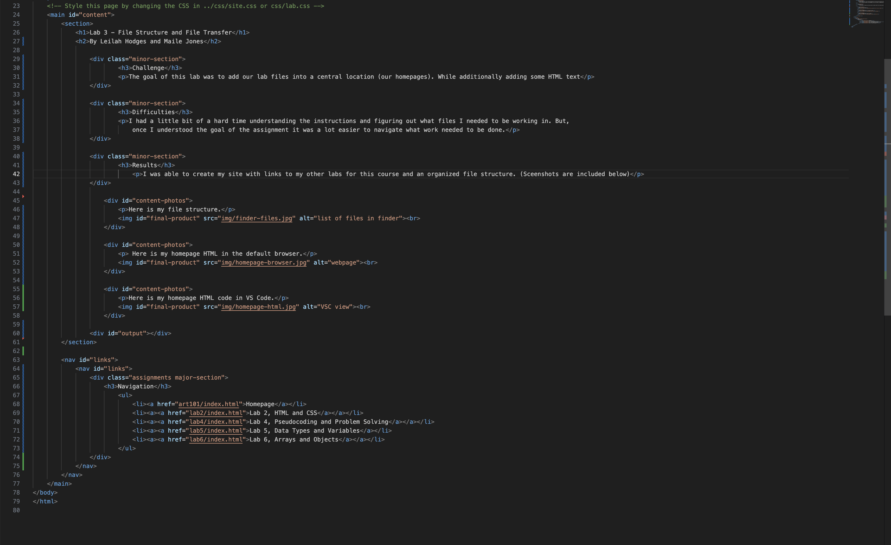

Lab 3 - File Structure and File Transfer
By Leilah Hodges and Maile Jones
Challenge
The goal of this lab was to add our lab files into a central location (our homepages). While additionally adding some HTML text
Difficulties
I had a little bit of a hard time understanding the instructions and figuring out what files I needed to be working in. But, once I understood the goal of the assignment it was a lot easier to navigate what work needed to be done.
Results
I was able to create my site with links to my other labs for this course and an organized file structure. (Sceenshots are included below)
Here is my file structure.
Here is my homepage HTML in the default browser.
Here is my homepage HTML code in VS Code.
Here is Lab 3 in the default browser.
Here is Lab 3 HTML in VS Code.
